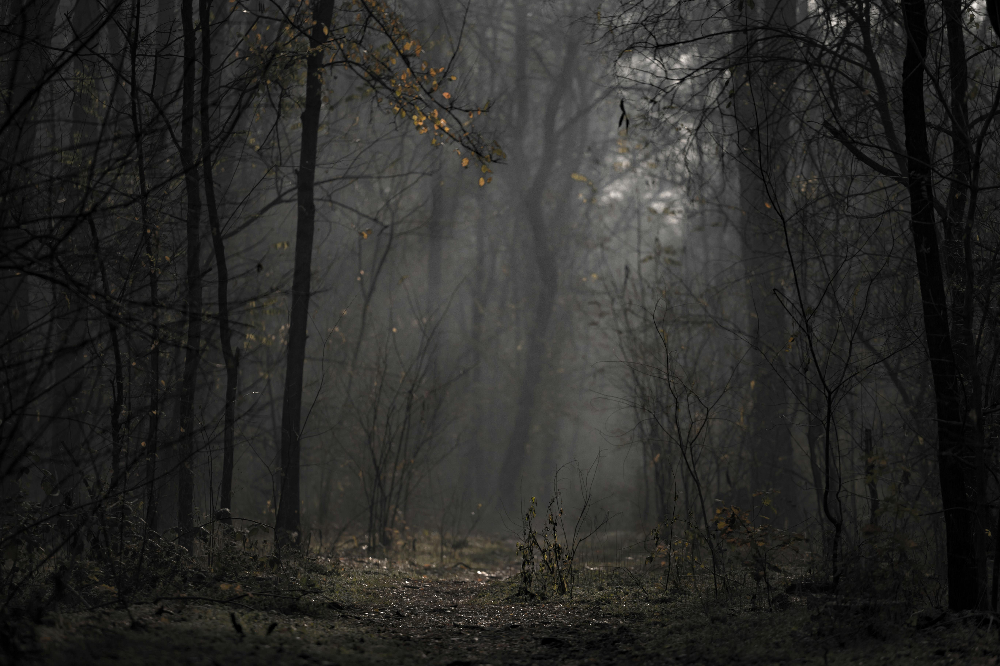

Bakonyi Bitfaragók
12
3
6
9
-

Solti Csongor Péter
Felkészítő tanár: Drávucz Katalin
Iskola: BMSZC Neumann János
Extra képek



Solti Csongor Péter
Felkészítő tanár: Drávucz Katalin
Iskola: BMSZC Neumann János
